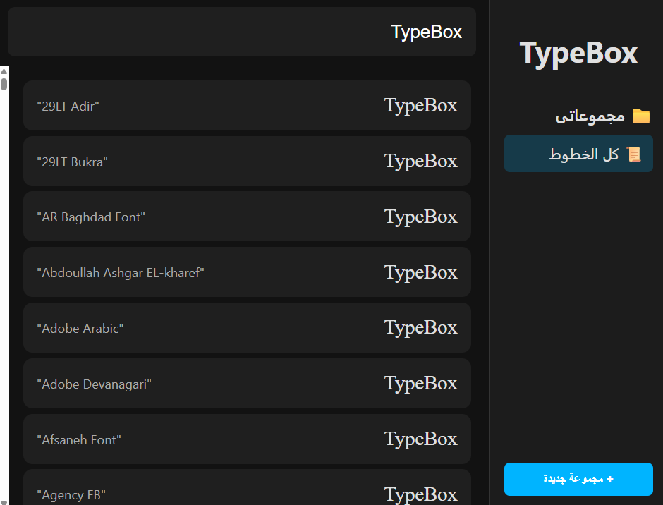

أطلق العنان لإبداعك. نظم خطوطك بذكاء.
برنامج TypeBox يساعدك على معاينة، مقارنة، وتنظيم كل خطوطك في مكان واحد، مصمم خصيصًا للمبدعين والمصممين.
تحميل أحدث إصدار متوافق مع نظام ويندوز

لماذا TypeBox هو خيارك الأفضل؟
تنظيم احترافي
أنشئ مجموعات مخصصة لخطوطك (خطوط للمشاريع، خطوط للشعارات، خطوط عربية) لتصل إليها بسرعة وسهولة.
معاينة فورية
اكتب أي نص وشاهده فورًا على كل خطوطك أو المجموعات التي اخترتها لتتخذ القرار الصحيح في ثوانٍ.
سهولة الاستخدام
واجهة بسيطة وواضحة باللغة العربية. انسخ اسم أي خط بنقرة واحدة لاستخدامه في برامج التصميم المفضلة لديك.
جاهز لتبدأ؟
وفر وقتك وجهدك. حمّل TypeBox الآن واكتشف الطريقة الأسهل للتعامل مع الخطوط.
تحميل مجاني لنسخة تجريبية